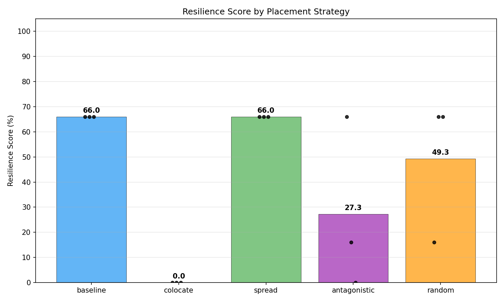
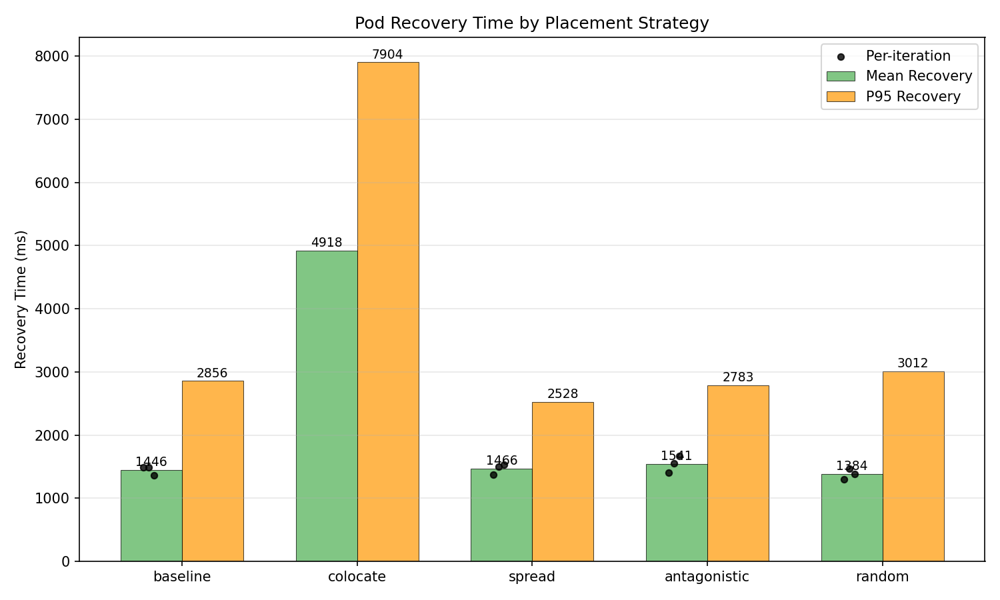
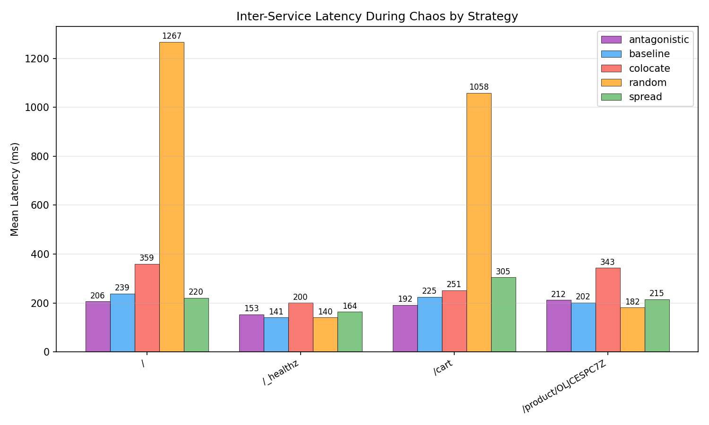
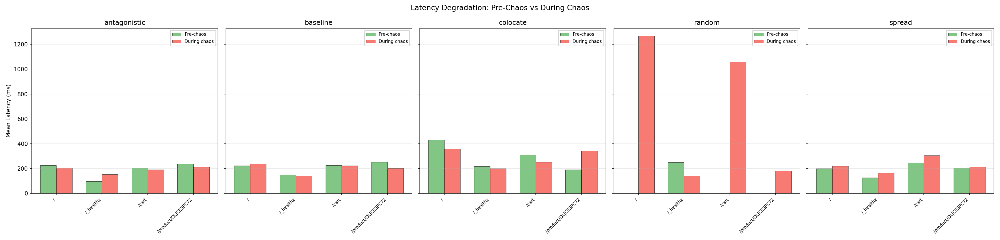
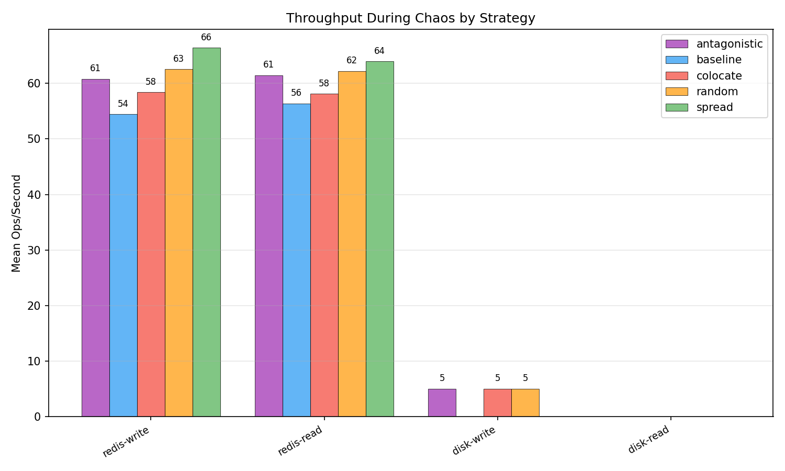
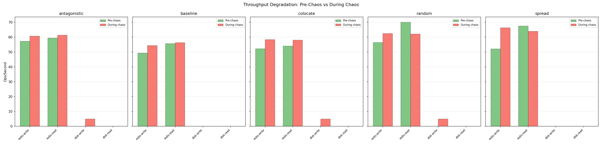
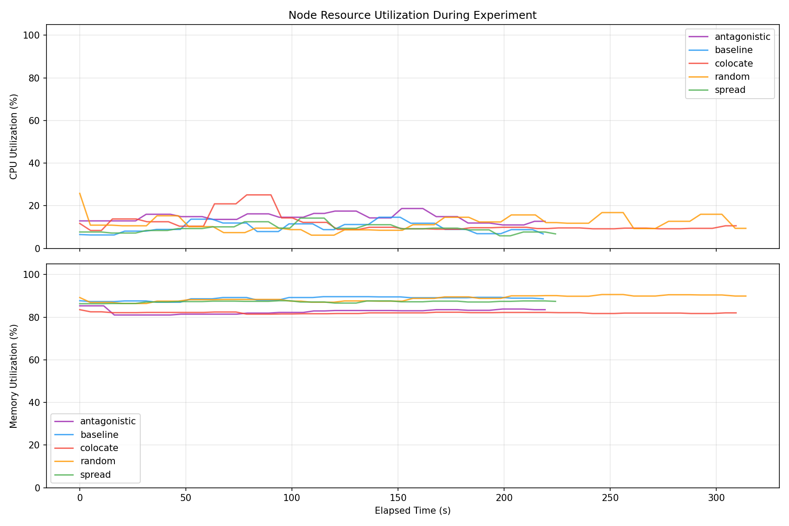
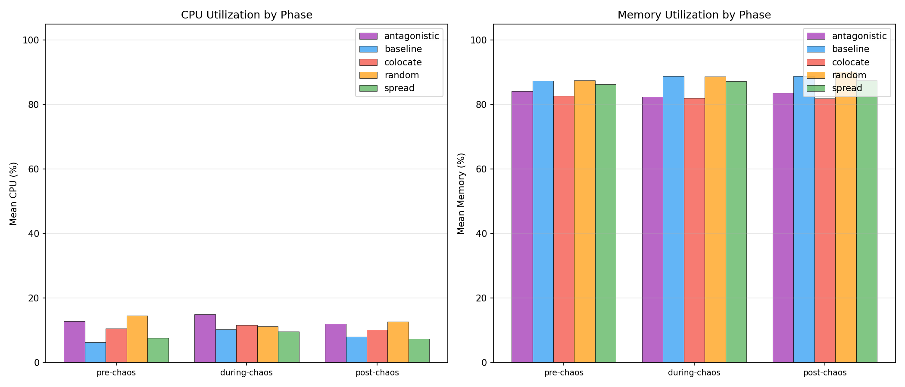
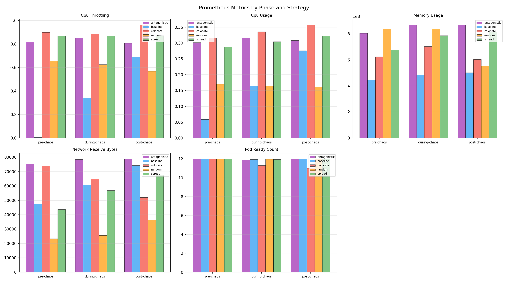

| Strategy | Runs | Avg Resilience Score | Pass Rate | Mean Recovery (ms) | Median Recovery (ms) | P95 Recovery (ms) |
|---|---|---|---|---|---|---|
| antagonistic | 3 | 27.3 | 0% | 1541.3 | 1551.5 | 2783.0 |
| baseline | 3 | 66.0 | 0% | 1445.9 | 1486.2 | 2856.0 |
| colocate | 3 | 0.0 | 0% | 4918.5 | 4918.5 | 7904.0 |
| random | 3 | 49.3 | 0% | 1384.3 | 1380.2 | 3012.0 |
| spread | 3 | 66.0 | 0% | 1466.1 | 1494.2 | 2528.0 |
| Strategy | Route | Pre-Chaos Mean (ms) | During Chaos Mean (ms) | During Chaos P95 (ms) | Post-Chaos Mean (ms) | Errors During Chaos |
|---|---|---|---|---|---|---|
| antagonistic | / | 225.4 | 206.3 | 303.7 | 182.8 | 5 |
| antagonistic | /_healthz | 98.0 | 153.0 +56% | 296.5 | 156.8 | 0 |
| antagonistic | /cart | 203.7 | 191.6 | 347.4 | 236.7 | 0 |
| antagonistic | /product/OLJCESPC7Z | 237.5 | 212.4 | 383.0 | 248.9 | 4 |
| baseline | / | 224.3 | 238.7 | 398.2 | 277.8 | 3 |
| baseline | /_healthz | 150.5 | 140.5 | 288.2 | 127.6 | 0 |
| baseline | /cart | 225.1 | 225.0 | 302.0 | 205.3 | 0 |
| baseline | /product/OLJCESPC7Z | 251.1 | 201.5 | 376.8 | 239.2 | 4 |
| colocate | / | 432.6 | 359.4 | 581.9 | n/a | 55 |
| colocate | /_healthz | 217.9 | 200.4 | 318.2 | 144.0 | 0 |
| colocate | /cart | 308.9 | 251.2 | 408.0 | 189.6 | 0 |
| colocate | /product/OLJCESPC7Z | 191.9 | 343.1 +79% | 508.5 | n/a | 55 |
| random | / | n/a | 1267.1 | 3342.7 | n/a | 56 |
| random | /_healthz | 249.8 | 140.4 | 304.4 | n/a | 34 |
| random | /cart | n/a | 1058.3 | 3360.0 | n/a | 55 |
| random | /product/OLJCESPC7Z | n/a | 181.6 | 273.8 | n/a | 56 |
| spread | / | 200.0 | 220.3 | 380.8 | 374.0 | 5 |
| spread | /_healthz | 127.0 | 163.6 | 307.4 | 138.7 | 0 |
| spread | /cart | 248.1 | 304.8 | 1039.4 | 398.9 | 0 |
| spread | /product/OLJCESPC7Z | 203.8 | 215.4 | 391.4 | 197.1 | 6 |
| Strategy | Operation | Pre-Chaos Ops/s | During Chaos Ops/s | During Chaos Latency (ms) | During Chaos Bandwidth | Post-Chaos Ops/s |
|---|---|---|---|---|---|---|
| antagonistic | redis-read | 59.5 | 61.5 | 16.29 | n/a | n/a |
| antagonistic | redis-write | 57.3 | 60.8 | 16.48 | n/a | n/a |
| antagonistic | disk-read | n/a | n/a | n/a | n/a | n/a |
| antagonistic | disk-write | n/a | 5.0 | 200.00 | 2.5 MB/s | n/a |
| baseline | redis-read | 55.8 | 56.4 | 17.86 | n/a | 61.4 |
| baseline | redis-write | 49.4 | 54.4 | 18.48 | n/a | 56.8 |
| baseline | disk-read | n/a | n/a | n/a | n/a | n/a |
| baseline | disk-write | n/a | n/a | n/a | n/a | n/a |
| colocate | redis-read | 54.1 | 58.1 | 17.49 | n/a | 62.3 |
| colocate | redis-write | 52.2 | 58.4 | 17.34 | n/a | 62.4 |
| colocate | disk-read | n/a | n/a | n/a | n/a | n/a |
| colocate | disk-write | n/a | 5.0 | 200.00 | 2.5 MB/s | n/a |
| random | redis-read | 70.2 | 62.2 | 16.38 | n/a | 63.0 |
| random | redis-write | 56.5 | 62.5 | 16.12 | n/a | 69.5 |
| random | disk-read | n/a | n/a | n/a | n/a | n/a |
| random | disk-write | n/a | 5.0 | 200.00 | 2.5 MB/s | n/a |
| spread | redis-read | 67.6 | 64.0 | 15.70 | n/a | 66.6 |
| spread | redis-write | 52.1 | 66.4 | 15.08 | n/a | 56.5 |
| spread | disk-read | n/a | n/a | n/a | n/a | n/a |
| spread | disk-write | n/a | n/a | n/a | n/a | n/a |
| Strategy | Phase | Mean CPU (%) | Mean Memory (%) | Samples |
|---|---|---|---|---|
| antagonistic | pre-chaos | 12.9 | 84.2 | 4 |
| antagonistic | during-chaos | 15.0 | 82.4 | 36 |
| antagonistic | post-chaos | 12.1 | 83.6 | 3 |
| baseline | pre-chaos | 6.3 | 87.4 | 4 |
| baseline | during-chaos | 10.3 | 88.8 | 36 |
| baseline | post-chaos | 8.1 | 88.8 | 3 |
| colocate | pre-chaos | 10.6 | 82.7 | 4 |
| colocate | during-chaos | 11.7 | 82.0 | 53 |
| colocate | post-chaos | 10.2 | 81.9 | 3 |
| random | pre-chaos | 14.6 | 87.5 | 4 |
| random | during-chaos | 11.3 | 88.7 | 53 |
| random | post-chaos | 12.7 | 90.2 | 4 |
| spread | pre-chaos | 7.6 | 86.3 | 4 |
| spread | during-chaos | 9.7 | 87.2 | 37 |
| spread | post-chaos | 7.4 | 87.5 | 3 |
| Strategy | Metric | Phase | Mean | Max | Samples |
|---|---|---|---|---|---|
| antagonistic | cpu_throttling | pre-chaos | 0.8164 | 0.8247 | 2 |
| antagonistic | cpu_throttling | during-chaos | 0.8523 | 0.8736 | 18 |
| antagonistic | cpu_throttling | post-chaos | 0.8065 | 0.8165 | 2 |
| antagonistic | cpu_usage | pre-chaos | 0.3018 | 0.3039 | 2 |
| antagonistic | cpu_usage | during-chaos | 0.3172 | 0.3273 | 18 |
| antagonistic | cpu_usage | post-chaos | 0.3080 | 0.3149 | 2 |
| antagonistic | memory_usage | pre-chaos | 803923968.0000 | 829673472.0000 | 2 |
| antagonistic | memory_usage | during-chaos | 868688099.5556 | 910966784.0000 | 18 |
| antagonistic | memory_usage | post-chaos | 870795264.0000 | 871428096.0000 | 2 |
| antagonistic | network_receive_bytes | pre-chaos | 75382.4043 | 75849.9870 | 2 |
| antagonistic | network_receive_bytes | during-chaos | 78472.6454 | 82667.2481 | 18 |
| antagonistic | network_receive_bytes | post-chaos | 78817.2620 | 79422.4877 | 2 |
| antagonistic | pod_ready_count | pre-chaos | 12.0000 | 12.0000 | 2 |
| antagonistic | pod_ready_count | during-chaos | 11.8889 | 12.0000 | 18 |
| antagonistic | pod_ready_count | post-chaos | 12.0000 | 12.0000 | 2 |
| baseline | cpu_throttling | pre-chaos | 0.0053 | 0.0054 | 2 |
| baseline | cpu_throttling | during-chaos | 0.3415 | 0.6215 | 18 |
| baseline | cpu_throttling | post-chaos | 0.6919 | 0.7220 | 2 |
| baseline | cpu_usage | pre-chaos | 0.0589 | 0.0595 | 2 |
| baseline | cpu_usage | during-chaos | 0.1647 | 0.2524 | 18 |
| baseline | cpu_usage | post-chaos | 0.2760 | 0.2838 | 2 |
| baseline | memory_usage | pre-chaos | 447610880.0000 | 448053248.0000 | 2 |
| baseline | memory_usage | during-chaos | 481697792.0000 | 520036352.0000 | 18 |
| baseline | memory_usage | post-chaos | 501901312.0000 | 508645376.0000 | 2 |
| baseline | network_receive_bytes | pre-chaos | 47421.9682 | 47592.7580 | 2 |
| baseline | network_receive_bytes | during-chaos | 60647.1481 | 70807.6260 | 18 |
| baseline | network_receive_bytes | post-chaos | 74247.0773 | 75143.2469 | 2 |
| baseline | pod_ready_count | pre-chaos | 12.0000 | 12.0000 | 2 |
| baseline | pod_ready_count | during-chaos | 11.9444 | 12.0000 | 18 |
| baseline | pod_ready_count | post-chaos | 12.0000 | 12.0000 | 2 |
| colocate | cpu_throttling | pre-chaos | 0.8993 | 0.9089 | 2 |
| colocate | cpu_throttling | during-chaos | 0.8863 | 0.9316 | 27 |
| colocate | cpu_throttling | post-chaos | 0.9648 | 0.9648 | 1 |
| colocate | cpu_usage | pre-chaos | 0.3169 | 0.3174 | 2 |
| colocate | cpu_usage | during-chaos | 0.3358 | 0.3538 | 27 |
| colocate | cpu_usage | post-chaos | 0.3580 | 0.3580 | 1 |
| colocate | memory_usage | pre-chaos | 625360896.0000 | 646852608.0000 | 2 |
| colocate | memory_usage | during-chaos | 703624381.6296 | 768442368.0000 | 27 |
| colocate | memory_usage | post-chaos | 603152384.0000 | 603152384.0000 | 1 |
| colocate | network_receive_bytes | pre-chaos | 74120.1393 | 74679.1773 | 2 |
| colocate | network_receive_bytes | during-chaos | 64756.3466 | 75877.6642 | 27 |
| colocate | network_receive_bytes | post-chaos | 52012.5421 | 52012.5421 | 1 |
| colocate | pod_ready_count | pre-chaos | 12.0000 | 12.0000 | 2 |
| colocate | pod_ready_count | during-chaos | 11.2963 | 12.0000 | 27 |
| colocate | pod_ready_count | post-chaos | 11.0000 | 11.0000 | 1 |
| random | cpu_throttling | pre-chaos | 0.6538 | 0.6625 | 2 |
| random | cpu_throttling | during-chaos | 0.6264 | 0.6604 | 27 |
| random | cpu_throttling | post-chaos | 0.5678 | 0.5678 | 1 |
| random | cpu_usage | pre-chaos | 0.1697 | 0.1712 | 2 |
| random | cpu_usage | during-chaos | 0.1648 | 0.1751 | 27 |
| random | cpu_usage | post-chaos | 0.1606 | 0.1606 | 1 |
| random | memory_usage | pre-chaos | 839026688.0000 | 877019136.0000 | 2 |
| random | memory_usage | during-chaos | 836391518.8148 | 918142976.0000 | 27 |
| random | memory_usage | post-chaos | 555524096.0000 | 555524096.0000 | 1 |
| random | network_receive_bytes | pre-chaos | 23429.1961 | 23451.6944 | 2 |
| random | network_receive_bytes | during-chaos | 25656.5305 | 36607.0321 | 27 |
| random | network_receive_bytes | post-chaos | 36400.1343 | 36400.1343 | 1 |
| random | pod_ready_count | pre-chaos | 12.0000 | 12.0000 | 2 |
| random | pod_ready_count | during-chaos | 11.9630 | 12.0000 | 27 |
| random | pod_ready_count | post-chaos | 12.0000 | 12.0000 | 1 |
| spread | cpu_throttling | pre-chaos | 0.8695 | 0.9027 | 2 |
| spread | cpu_throttling | during-chaos | 0.8696 | 0.8964 | 18 |
| spread | cpu_throttling | post-chaos | 0.8716 | 0.8758 | 2 |
| spread | cpu_usage | pre-chaos | 0.2879 | 0.2955 | 2 |
| spread | cpu_usage | during-chaos | 0.3047 | 0.3254 | 18 |
| spread | cpu_usage | post-chaos | 0.3215 | 0.3254 | 2 |
| spread | memory_usage | pre-chaos | 675229696.0000 | 709541888.0000 | 2 |
| spread | memory_usage | during-chaos | 787905422.2222 | 850280448.0000 | 18 |
| spread | memory_usage | post-chaos | 816556032.0000 | 835260416.0000 | 2 |
| spread | network_receive_bytes | pre-chaos | 43597.7336 | 43676.8194 | 2 |
| spread | network_receive_bytes | during-chaos | 56922.2079 | 68716.2158 | 18 |
| spread | network_receive_bytes | post-chaos | 67764.6301 | 69499.1432 | 2 |
| spread | pod_ready_count | pre-chaos | 12.0000 | 12.0000 | 2 |
| spread | pod_ready_count | during-chaos | 11.9444 | 12.0000 | 18 |
| spread | pod_ready_count | post-chaos | 12.0000 | 12.0000 | 2 |








